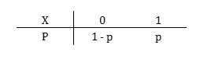
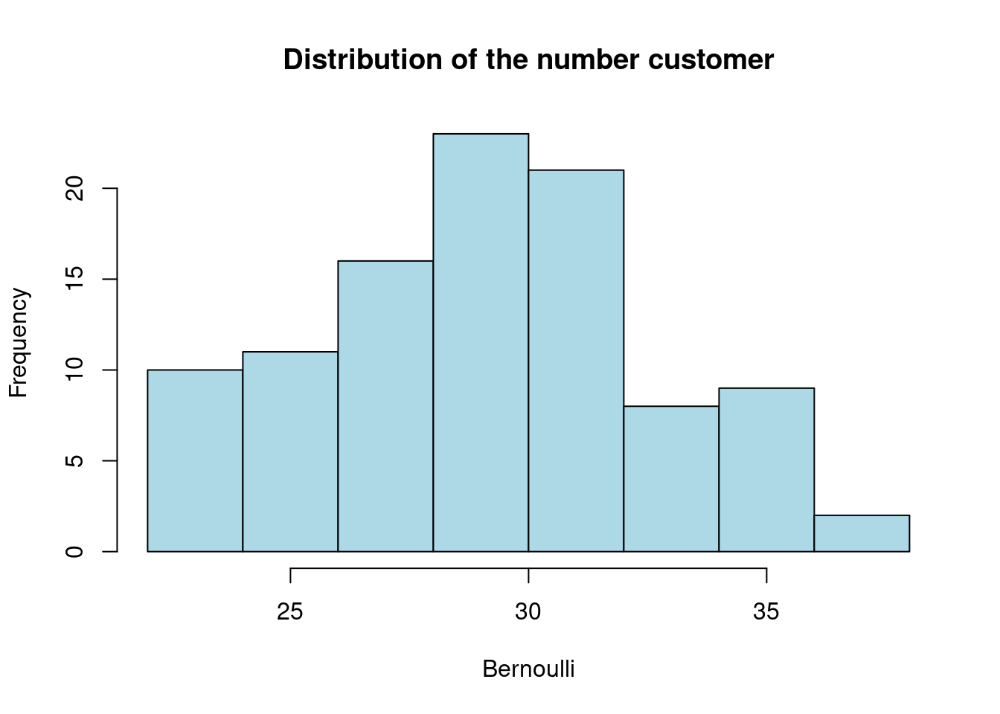
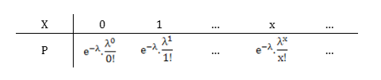
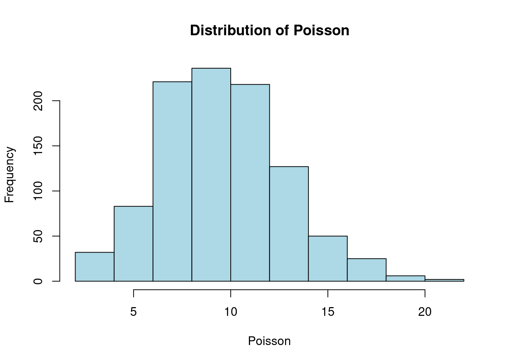
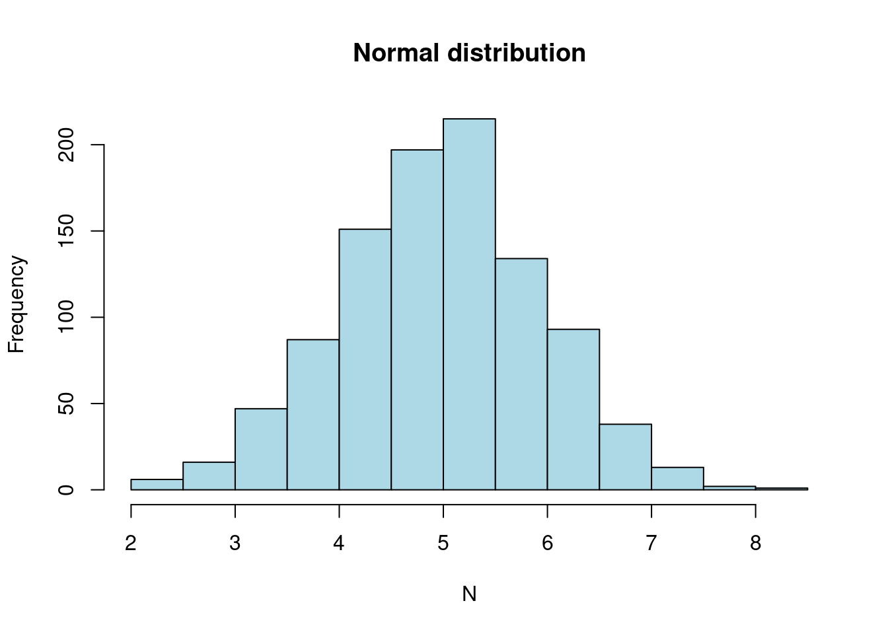
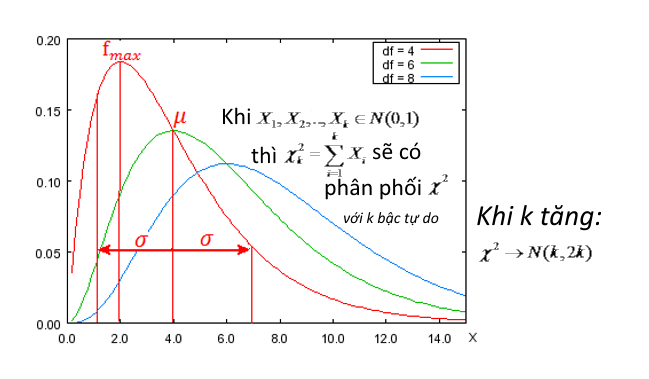

Khi làm việc thực tế, chúng ta ít phải thực hiện các phép tính xác suất chi tiết. Tuy nhiên, nắm vững các kiến thức này sẽ giúp chúng ta nắm vững và hiểu rõ hơn bản chất các thuật toán hoặc tìm ra được bản chất các vấn đề khi giải quyết các bài toán kinh doanh phức tạp
12.1 Xác suất
12.1.1 Nhân xác suất
\[P(A \frown B) = P(AB) = P(A)*P(B|A) = P(B)*P(A|B)\]
Kỳ vọng của tích các sai lệch giữa các biến so với trung bình của chúng
Hiệp phương sai có đơn vị bằng tích các đơn vị đo lường, do đó với mỗi đơn vị lường khác nhau ta thu được kết quả khác nhau. Để khắc phục hạn chế này, ta sử dụng hệ số tương quan
Pearson's product-moment correlation
data: mtcars$cyl and mtcars$wt
t = 6.8833, df = 30, p-value = 1.218e-07
alternative hypothesis: true correlation is not equal to 0
95 percent confidence interval:
0.5965795 0.8887052
sample estimates:
cor
0.7824958
12.3 Các phân phối cơ bản
12.3.1 Phân phối không – một A(p)

Trong phân phối này, biến ngẫu nhiên X nhận một trong hai giá trị {0, 1} với xác suất tương ứng {1 –p ; p} được gọi là phân phối theo quy luật không – một với tham số p.
Thực hiện n lần (hữu hạn) biến ngẫu nhiên Y (phân phối theo quy luật không – một với tham số p), thu được biến ngẫu nhiên X phân phối theo quy luật nhị thức với các tham số n và p \[P_x = C_n^{x}p^{x}(1 – p)^{x}\] Các tham số đặc trưng :
\(E(X) = n*p\)
\(V(X) = np(1 - p)\)
\(\sigma (X) = \sqrt{np(1 – p)}\)
Ví dụ
Giả sử tỷ lệ gửi TD Online của khách hàng có VPO là 60%. Nếu tiến hành 100 đợt truyền thông, mỗi đợt lấy ngẫu nhiên 50 người, phân bố của khách hàng có VPO gửi TD online là :
hist(Bernoulli,main ="Distribution of the number customer",col ="lightblue")

Tính xác suất để có 35 người gửi TD Online trong mỗi đợt truyền thông:
dbinom(35,50,0.6)
[1] 0.04154667
12.3.3 Phân phối Poisson

Thực hiện n lần biến ngẫu nhiên Y (phân phối theo quy luật không – một với tham số p), trong trường hợp n quá lớn và p quá nhỏ, thu được biến ngẫu nhiên X phân phối theo quy luật Poisson với tham số \(\lambda = n*p\)\[P_x = e^{-\lambda}\frac{\lambda^{x}}{x!}\]
Các tham số đặc trưng :
\[E(X) = \lambda\]
\[V(X) = \lambda\]
Lưu ý: công thức Poisson có thể dùng thay cho công thức Bernoulli nếu thỏa mãn điều kiện n >= 20 và p <= 0.1 hay np ≈ np(1 – p)
Ví dụ:
Mô phỏng 100 mẫu quan sát phân phối Poisson với \(\lambda = 10\)
Poisson <-rpois(1000,10)hist(Poisson,main ="Distribution of Poisson",col ="lightblue")

Ví dụ
Qua theo dõi các đợt truyền thông cho khách hàng inactive, cứ 1000 khách hàng active trở lại thì trung bình có 5 khách hàng map ví MOMO (0.5%). Tính xác suất để có 10 khách hàng map ví? nhiều hơn 10 khách hàng map ví?
Xác suất để có nhiều hơn 10 KH map ví MOMO: \[P(X > 10|\lambda = 5) = 1 - P(X <= 10|\lambda = 5)\]
1-ppois(10,5)
[1] 0.01369527
12.3.4 Phân phối lũy thừa E(\(\lambda\))
Quy luật Phân phối lũy thừa
Biến ngẫu nhiên liên tục X gọi là phân phối theo quy luật lũy thừa nếu hàm mật độ xác suất của nó có dạng :
\[f(x) = \begin{cases}0 & , x < 0\\\lambda e^{-\lambda x} & , x >= 0\end{cases}\]
Trong đó \(\lambda\) là một hằng số dương
Các tham số đặc trưng :
\(E(X) = \frac{1}{\lambda}\)
\(V(X) = \frac{1}{\lambda^{2}}\)
Tính chất của quy luật phân phối lũy thừa : Xác suất xảy ra của biến ngẫu nhiên X trong khoảng thời gian t không phụ thuộc vào quãng thời gian trước đó mà chỉ phụ thuộc vào độ dài của khoảng thời gian t dang xét.
12.3.5 Phân phối chuẩn N(\(\mu\), \(\sigma^{2}\))
Biến ngẫu nhiên liên tục X gọi là phân phối theo quy luật chuẩn với các tham số \(\mu\) và \(\sigma^{2}\), nếu hàm mật độ xác suất của nó có dạng : \[f(x) = \frac{1}{\sqrt{2\pi\sigma^{2}}}e^{-\frac{(x - \mu)^{2}}{2\sigma^{2}}}\] Các tham số đặc trưng :
\(E(X) = \mu\)
\(V(X) = \sigma^{2}\)
Ví dụ:
Mô phỏng 1000 quan sát phân phối chuẩn với \(\mu = 5\), \(\sigma = 1\)
N <-rnorm(1000,5,1)hist(N,main ="Normal distribution",col ="lightblue")

Ước lượng khoảng tin cậy của trung bình khi biết \(\sigma^{2}\)\[\mu_X - U_\frac{\alpha}{2}\frac{\sigma}{\sqrt{n}} < \mu < \mu_X + U_\frac{\alpha}{2}\frac{\sigma}{\sqrt{n}}\] Trong đó :
\(\mu_X\) : Trung bình mẫu quan sát
\(\sigma\) : Độ lệch chuẩn tổng thể
\(n\) : Số quan sát của mẫu
\(U_\alpha\) : giá trị của thống kê U tại mức ý nghĩa \(\alpha\)
Ví dụ:
Ước lượng trung bình tổng thể, biết \(\sigma\) = 2; khảo sát mẫu gồm 1000 quan sát thu được \(\mu_X = 10\).
Với mức ý nghĩa \(\alpha = 0.05\), trung bình tổng thể nằm trong khoảng :
a <-0.05U <-qnorm(1- a/2)mu_X <-10n <-1000sigma =2TB <-c(mu_X - U * sigma/sqrt(n), mu_X + U * sigma/sqrt(n))TB
[1] 9.876041 10.123959
Ước lượng khoảng tin cậy của trung bình khi chưa biết \(\sigma^{2}\)
\[\mu_X - t_\frac{\alpha}{2}^{(n-1)}\frac{S}{\sqrt{n}} < \mu(X) < \mu_X + t_\frac{\alpha}{2}^{(n-1)}\frac{S}{\sqrt{n}}\] Trong đó :
\(\mu_X\) : Trung bình các mẫu quan sát
\(S\) : Độ lệch chuẩn trung bình các mẫu quan sát
\(n\) : Số quan sát của mẫu
\(t_\alpha\) : giá trị của thống kê T tại mức ý nghĩa \(\alpha\)
Ví dụ:
Ước lượng trung bình tổng thể, biết rằng khi khảo sát 50 mẫu (mỗi mẫu 1000 quan sát) thu được \(\mu_X = 10\) và \(S = 1\)
Với mức ý nghĩa \(\alpha = 0.05\), trung bình tổng thể nằm trong khoảng :
a <-0.05t <-qnorm(1-a/2) ##Vì k = 50 > 30 nên T(n) ~ U(0,1)mu_X <-10n <-1000S =1TB <-c(mu_X - t * S/sqrt(n), mu_X + t * S/sqrt(n))TB
[1] 9.93802 10.06198
12.3.6 Quy luật chi bình phương \(\chi^{2} (n)\)

Nếu \(X_1, X_2,...,X_k\) là các biến ngẫu nhiên độc lập có phân phối chuẩn hóa N(0,1) thì \[\chi_k^{2} = \sum{X_i} \ \ ; với\ i = 1,k\] tuân theo phân phối Chi bình phương với k bậc tự do
Tính chất của phân phối chi bình phương : Là phân phối lệch trái, khi bậc tự do tăng dần thì phân phối chi bình phương tiến gần đến phân phối chuẩn N(k,2k)
12.3.7 Phân phối t-student
Quy luật Student
Nếu Z ~ N(0,1) và \(\chi_k^{2}\) độc lập thống kê thì \[T_k = \frac{Z}{\sqrt{\chi_k^{2}/k}}\] tuân theo phân phối Student (thống kê t) với k bậc tự do
Phân phối Student cũng đối xứng quanh 0 như phân phối chuẩn hóa nhưng thấp hơn. Khi bậc tự do càng lớn (k >= 30) thì phân phối Student tiệm cận đến phân phối chuẩn hóa N(0,1)